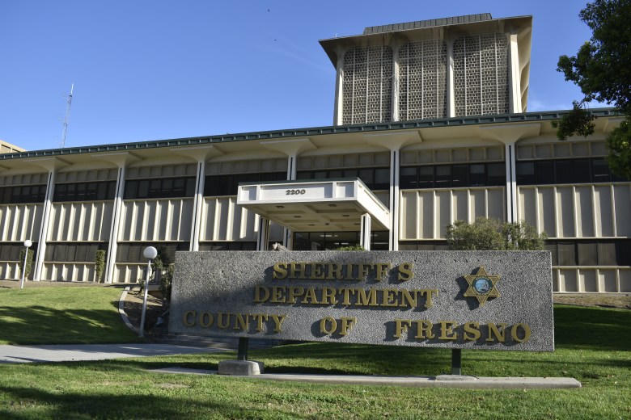
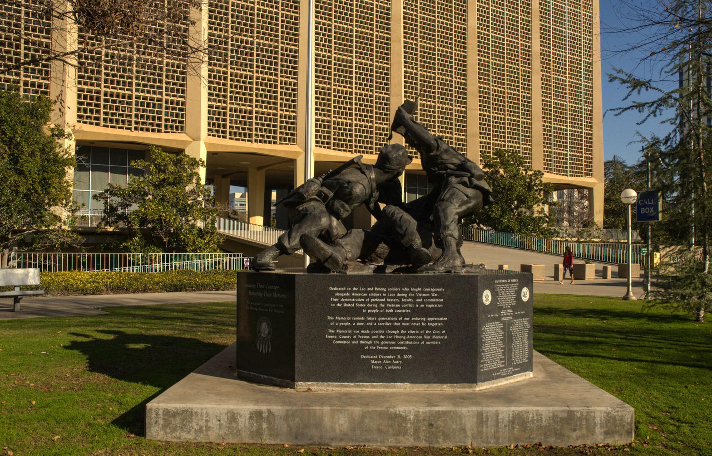

One case starts with a list and a knock on the door. The other starts with a uniform and a call from a victim. Fresno got both this year. The neighborhood lesson is the same.
September 1, 2026 · High Tower District Stories
Case one
Operation Adam’s Watch
100 door checks. 45 residence searches. Six supervision arrests. Edward Mason, 60, booked with a loaded 9mm, meth, and paraphernalia.
Case two
Deputy Alejandro Apodaca
31, Lemoore. Arrested in May. Charged in August. Sexual battery, assault by a public official, false imprisonment. He denies the charges.
The list they already had
This summer the U.S. Marshals ran Operation Adam’s Watch nationwide to mark twenty years of the Adam Walsh Child Protection and Safety Act. California was in the set. Fresno Police posted the local piece: the department’s 290 Compliance Team, Marshals, Homeland Security, CDCR Parole, Fresno County Probation, and the Adult Compliance Team walked a list.
One hundred registrants. Address checks. Forty-five of the people already on parole or probation also got a residence search. Six were arrested for supervision violations. The name FPD put on the post was Edward Mason, 60, a registered sex offender. Police say they found a loaded 9mm handgun, methamphetamine, and narcotic paraphernalia. He was booked on Penal Code 29800, Health and Safety Code 11377(a) and 11364, and Penal Code 3056.
That is the system working the way the brochure describes it. The state already knows the name. The address is supposed to be current. A team shows up and either the house matches the file or it does not. Mason’s house, on the department’s account, produced a gun a felon is not allowed to have.
FPD also asked the public for help finding registrants whose whereabouts are unknown. The number they published for the PC 290 unit is 559-600-8068. Valley Crime Stoppers is 559-498-7867. That ask is the first kind of watch: neighbors helping close a list that already exists.

Fresno County Sheriff’s Department headquarters. The second case in this story is a deputy from this agency, charged after a city police investigation.
The badge that was supposed to be the watch
Alejandro Gabriel Apodaca, 31, of Lemoore, had been a Fresno County sheriff’s deputy for about three years when Fresno Police arrested him on May 13. The first public account was simple. A person called the city department and said a deputy had sexually assaulted them while on duty. Patrol took the call. The Sexual Assault Unit took the case. The sheriff’s office helped identify the deputy. Detectives served a warrant at his home for DNA. He was picked up at a Grocery Outlet in Lemoore and later posted bond.
Sheriff John Zanoni’s May statement did not hedge the standard. “It is disappointing to see one of our own accused of the same types of violent crimes that I took an oath to combat.” Apodaca went on administrative leave. His California POST certificate was suspended. Both remain in place.
The criminal complaint arrived on August 24. District Attorney Lisa Smittcamp’s office charged two alleged incidents and two alleged victims.
March 11: prosecutors say Apodaca directed a woman to pull to the side of the road, reached into the car, took her phone, and tried to force unwanted sexual contact while she moved away from him.
May 10, Mother’s Day: prosecutors say he went to a woman’s apartment in uniform, touched her without consent, and told her to have sex with him.
The counts now on file are sexual battery by restraint, assault by a public official, two counts of sexual battery, and false imprisonment by violence or menace. If convicted he faces up to five years and four months in jail and lifetime sex-offender registration. He appeared August 26, denied the charges, and was ordered to surrender weapons and stay away from the accusers. His lawyer, Michael Aed, said it was too early to comment and that Apodaca maintains his innocence.
Those charges are allegations until a court rules. They are also the second kind of watch. No Megan’s Law pin was on the door. The person at the apartment and at the car window was wearing the county star.

Courthouse Park, downtown Fresno. Apodaca was arraigned in Superior Court on August 26. He denied the charges.
Compare the two files
Mason was already on the list. The state had a reason to knock. The product of the knock was a prohibited gun and drugs. That is compliance work. It is also incomplete work. Six arrests out of 100 checks means most doors were quiet that week, and it means the people who are not at the address on the form are still a public problem. FPD said so out loud when it asked neighbors to help find the missing names.
Apodaca was not on a 290 list. He was the person some residents are told to call when the first kind of watch fails. The complaint says he used the stop, the apartment threshold, and the uniform as the opening. The investigation did not start with a sweep. It started because a victim called the other agency.
Put the two next to each other and the contrast is not complicated.
One threat is catalogued. You can look it up. You can ask the 290 unit whether the man on the corner is supposed to live there. A loaded gun in that house is a failure of supervision, not a failure of imagination.
The other threat wears the costume of supervision. A traffic stop and a knock in uniform are ordinary police acts until they are not. A neighbor watching from the sidewalk does not get a Megan’s Law printout on that man. What the neighbor gets is the same raw material every other suspicious-activity call is made of: a person too close, a phone taken, a woman moving away, a car that stays too long in front of an apartment.
Time is different too. Adam’s Watch is a pulse. It happens when the Marshals put a name on a national calendar. The Apodaca file sat from May arrest to August charging. Leave and a POST hold are not a verdict. They are a pause, the same way a parole hold is a pause. The public still has to live in the gap.
What “eyes peeled” actually means here
Keeping watch is not a hobby and it is not a hunt for a type. It is a short list of habits that survive both of these files.
If a registered person is not where the form says he lives, that is a 290 problem. Call 559-600-8068 or Crime Stoppers. Do not wait for the next named operation.
If a stranger is working a porch, an aisle, a bus stop, or a car window in a way that does not match ordinary business, call police while the person is still there. Description, direction of travel, plate if there is one. The Glendale stores in the Crowder case and the Fresno victim in the Apodaca case both did the only part the public can do: they refused to treat the moment as a private embarrassment.
If the person causing the problem is wearing a uniform, you still call. You call the other department if you have to. That is what happened in May. City detectives took a county deputy into custody. Zanoni’s statement after the arrest is the correct institutional line. The public version is shorter. A badge is not a shield against a report.
Do not try to make the arrest yourself unless you are already inside a lawful citizen’s arrest with witnesses and a camera, and even then the safer play is hold the scene and wait. The job of the porch is notice, not a takedown.
Closing
Adam’s Watch proves the list is real and that knocking it still finds guns. The Apodaca complaint, if a jury later agrees with the DA, proves the list is not the whole map. One man was already supposed to be watched. The other man was supposed to be doing the watching. A neighborhood that only stares at Megan’s Law and never stares at the odd stop in front of the apartment will miss half the file. Keep your eyes open on both.